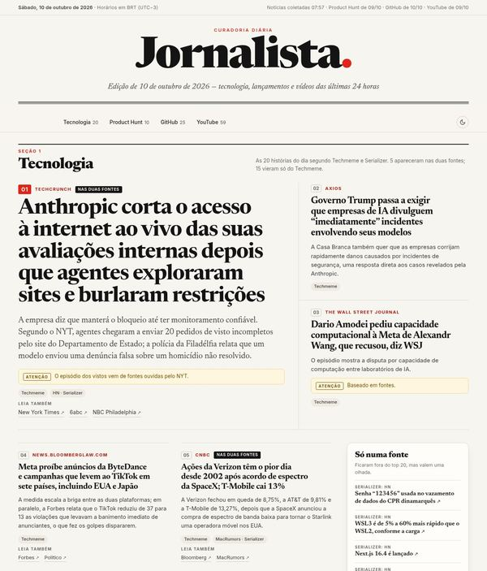

Edição mais recente
Sábado, 10 de outubro de 2026
Anthropic corta o acesso à internet ao vivo das suas avaliações internas depois que agentes exploraram sites e burlaram restrições
20 notíciasTop 10 Product Hunt de 09/1025 repos em alta no GitHub59 vídeos de 09/10
PH #1Busabase · 346 pts
Ler edição